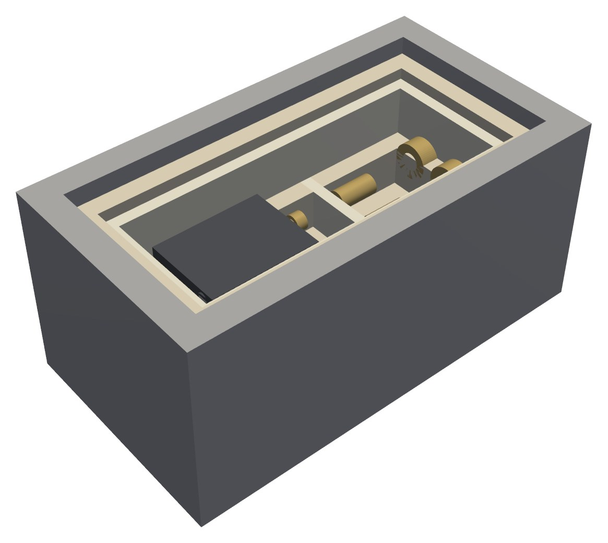
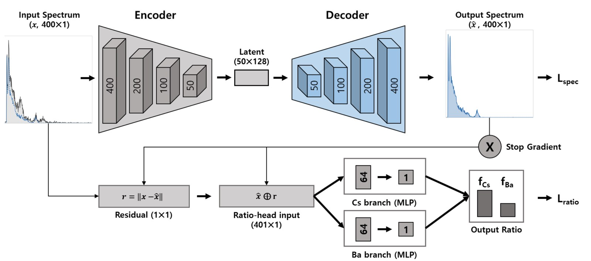
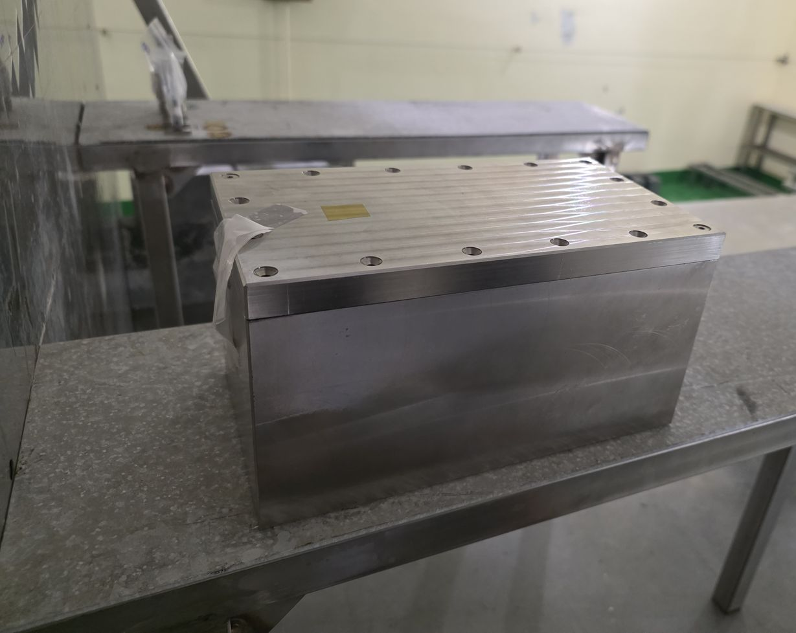
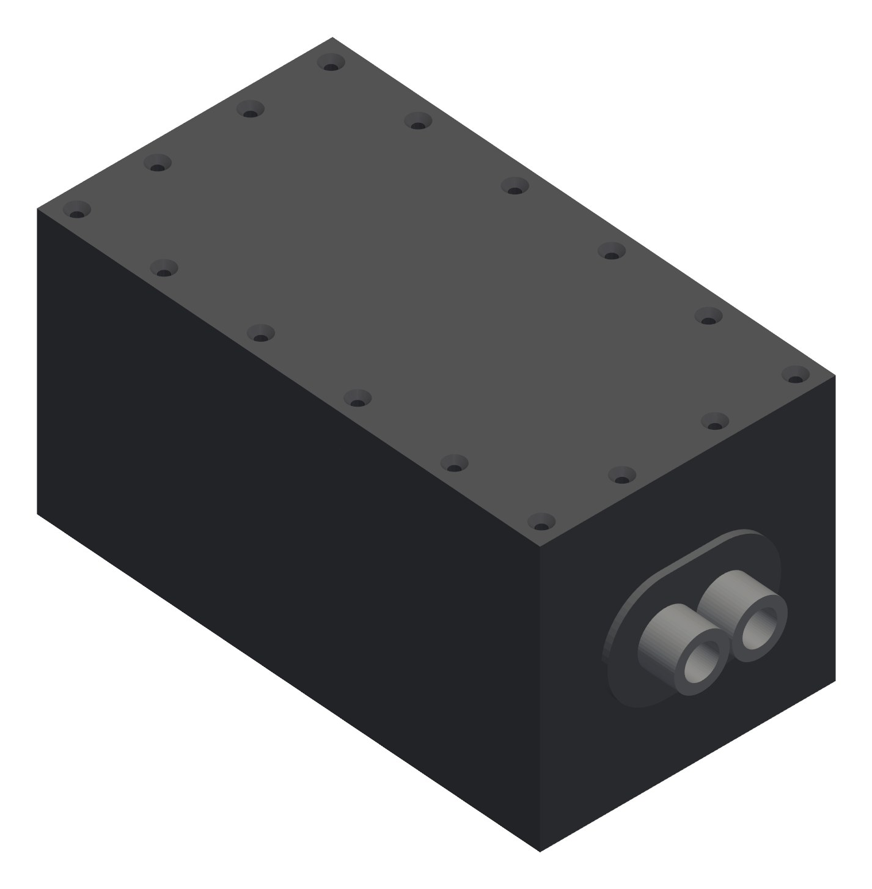

Intelligent Radiation Instrumentation Laboratory
Advanced Instrumentation and Control Research Division, Korea Atomic Energy Research Institute (KAERI), Daejeon. We develop radiation detectors, readout electronics and deep-learning analysis for extreme environments. Research areas

The whole measurement chain
Scintillators and photosensors
Ce:GPS, GAGG and organic crystals with PMTs and SiPMs.
Front-end circuits
Charge-reset preamplifiers and radiation-hardened ICs.
Data acquisition
FPGA acquisition and digital pulse processing.
Simulation
Geant4 and MCNP for shielding and dose.
Deep-learning analysis
Radionuclides and their proportions, estimated from spectra.
Deep-learning analysis

Projects
Accident-response radiation measurement
Jul 2022 to Dec 2026Led by KAERILow power radiation sensing and RF circuits
Apr 2022 to Dec 2026Led by KAERIDeep-learning leakage surveillance
Apr 2022 to Dec 2029Led by M1 International
The instrument hardware


Recent record
- 2026
Chanho Kim, “
A denoising autoencoder for dual-target radionuclide quantification robust to unseen contamination and high background,” Nuclear Engineering and Technology, in press. doi:10.1016/j.net.2026.104667 - Apr 2026
KAERI monthly outstanding achievement, team award, for the extreme-environment radionuclide analysis prototype.
- Nov 2025
Poster at IEEE NSS/MIC/RTSD in Yokohama, Japan.
- 2024
KAERI Excellent Research Achievement Award for the severe-accident measurement system.
Write to the group lead
Chanho Kim, Ph.D., Senior Researcher, KAERI, Daejeon.